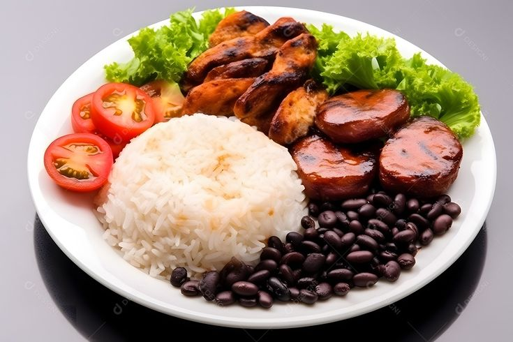
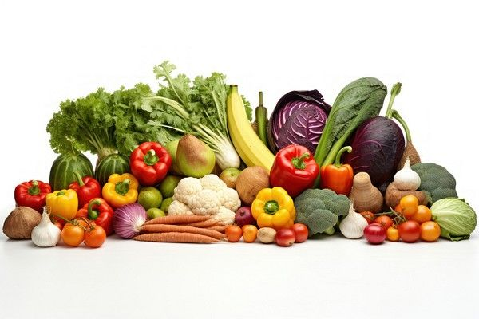

-

Comidas Saudaveis
-

Mudanças de Hábitos
Saiba mais -

meditação
Saiba mais -
Esportes com raquetes
Saiba mais
A verdade é que precisamos olhar para a alimentação equilibrada como uma forma de manter-se saudável, não apenas evitando a má nutrição, mas também doenças crônicas não transmissíveis (DCNT) e outras condições de saúde. Alimentar-se bem pode, inclusive, ajudar a saúde mental. Só com esses pontos, já dá para ter uma noção de como uma alimentação balanceada faz diferença, né? Agora bora se aprofundar um pouco mais nesse assunto para entender melhor como tudo isso funciona.
O que é uma Alimentação Equilibrada
Alimentação equilibrada é aquela que fornece todos os nutrientes fundamentais para o funcionamento do nosso corpo ,como carboidratos, lipídios, proteínas, sais minerais e vitaminas.
Muitas pessoas acreditam que os carboidratos e lipídios são vilões quando o assunto é uma alimentação adequada, entretanto, os carboidratos são uma importante fonte de energia para o nosso corpo, e os lipídios atuam, entre outras funções, na formação de certos hormônios, na proteção contra choques mecânicos e no transporte de vitaminas.
-

Gorduras Saudaveis
Saíba mais -

Proteinas
Saíba mais -

Carboidratos
Saíba mais -

Verduras
Saíba mais
Uma alimentação equilibrada é aquela que contém todos os nutrientes essenciais para o bom funcionamento do corpo: carboidratos, gorduras, vitaminas, minerais e fibras. Mas não é apenas isso, de acordo com o Ministério da Saúde, ela também deve respeitar três condições:
-
Variedade:nenhum alimento sozinho tem todos os nutrientes que a gente precisa. Por isso, é importante ter um prato colorido, com diferentes tipos de alimentos.
-
Moderação: não tem essa de “alimento proibido”. O segredo é não exagerar. Comer de tudo, mas com equilíbrio.quanto mais alimentos naturais e ricos em nutrientes, melhor. E quanto menos produtos ultraprocessados, melhor ainda
Seguindo esse trio: variedade, moderação e qualidade, você já está no caminho indicado para uma alimentação mais saudável e cheia de benefícios para o corpo.